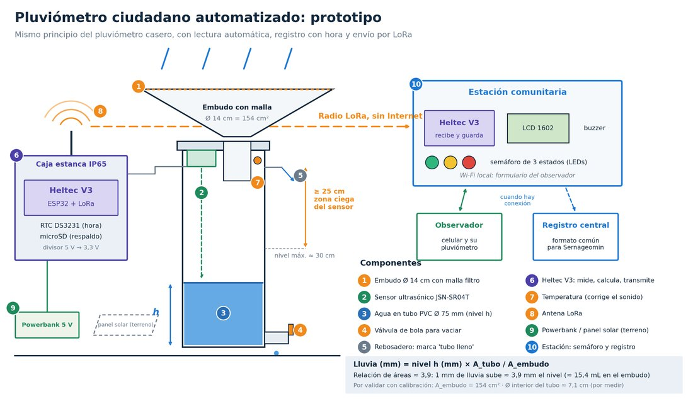

Datos simulados para prueba No corresponden a una medición real.
La lluvia en el Cajón del Maipo
—
Última lectura del sensor
—
—
Estado del dato
—
—
Acumulado de 24 h
—
—
—
—
Datos de prueba con el formato que usará la red de pluviómetros del Cajón del Maipo. Hay un punto propuesto y todavía no está instalado: esta página no es una red en operación.
Cargando el registro
Se está leyendo el archivo de datos que está en esta misma carpeta. Mientras tanto no se adelanta ninguna cifra.
El registro no se pudo leer
—
Se esperaba el archivo datos/registros.js, al lado de esta página. No
se pone una cifra en su lugar: sin dato no es cero.
Sin datos en el período
—
Sin lecturas del sensor en este archivo
El archivo solo trae lecturas del lector manual. Con eso no se calcula acumulado, intensidad ni gráfico: las filas se muestran tal como vienen, y nada más. Tampoco se rellenan con cero.
El archivo mezcla puntos
—
Los registros de puntos distintos no se suman entre sí: un acumulado así no corresponde a ningún pluviómetro.
Registros fuera del contrato
—
Un registro que no trae las siete claves del firmware, o que las trae con otro tipo, no se muestra ni se completa a mano.
- Punto
- —
- Unidad
- —
- Período
- —
- Fuente
- —
- Publicación del archivo
- —
Acumulado de 24 h
—
—
Total del archivo
—
—
Intensidad media del período
—
—
Desde el vaciado del tubo
—
—
Comparación con el pluviómetro manual
—
—
Período incompleto
—
—
—
—
| Hora de medición | Lluvia (mm) | Acumulado del tramo (mm) | Temperatura (°C) | Punto | Canal | Revisión | Publicado |
|---|
- La hora de medición y la hora de publicación son distintas, y se muestran las dos.
- El acumulado del tramo se reinicia cuando se vacía el tubo, y el vaciado queda marcado en su fila.
- Un registro sin revisar se marca sin revisar. No se esconde ni se descarta.
- Un período incompleto no se anuncia como acumulado completo: la ventana de 24 h se informa con lo que la serie cubre.
- La intensidad es un promedio del período del archivo, no la intensidad de un intervalo.
- El intervalo de 10 minutos lo declara el archivo, no el sketch: el de referencia emite un registro por pulsación, sin temporizador ni sueño entre mediciones.
Qué se está viendo
Estado del dato
Esta página no recibe mediciones en vivo: es una copia estática de la última publicación del registro. Lo que sigue dice cuándo se actualizó ese archivo y si el dato está al día o atrasado.
| Última publicación | — |
|---|---|
| Archivo generado | — |
| Antigüedad | — |
| Enlace con una estación | Ninguno. El archivo se publica a mano; no hay recepción automática de mediciones. |
| Calibración | Pendiente. No hay mediciones calibradas del sensor: las cifras de esta copia son simuladas. |
| Qué significa «atrasado» | La última publicación tiene más de seis horas. El registro sigue siendo válido como archivo, pero no describe la lluvia de ahora. |
—
Cómo mide
El instrumento
Un embudo recoge la lluvia y la lleva a un tubo. El agua sube, y un sensor ultrasónico mide a qué altura está. El resto es aritmética y relojes. Estas son las medidas del diseño y de qué depende la lectura.
- Diámetro del embudo
- 14 cm
- Área de captación
- 154 cm²
- Volumen por milímetro de lluvia
- 15,4 mL
- Diámetro del tubo
- 75 mm interior cercano a 7,1 cm, por medir
- Subida del agua por milímetro de lluvia
- 3,9 mm relación de áreas 3,9:1, por medir
- Resolución teórica del conjunto
- 0,26 mm con resolución de sensor cercana a 1 mm; calculada, no medida
- Valor de la demo del sketch (0,2 mm por evento)
- 0,2 mm constante de simulación, no una medición

El enlace de radio y la calibración están pendientes: el registro que se publica en esta copia lo genera el simulador con el mismo formato que usará la estación. Por eso ninguna cifra de esta página es una medición real.
Qué se guarda
El formato del registro
Todo registro guarda lo mismo, venga del sensor o del observador. Son los campos con los que se puede leer el CSV y el JSON que se descargan más arriba.
| Campo | Tipo | Ejemplo | Para qué |
|---|---|---|---|
id | texto | MV-SJM-0001 | Identificar el registro. Lo emite el dispositivo y no es único entre reinicios: el simulador le pone la fecha, MV-20261114-0016 |
station_id | texto | SJM-PLAZA-01 | De qué punto viene |
timestamp | ISO 8601 con zona | 2026-11-14T20:30:00-03:00 | Cuándo se midió. Sin desfase horario, el registro no entra |
rainfall_mm | número | 1.6 | Cuánta lluvia trae el registro. Nunca vacío ni negativo |
temperature_c | número o vacío | 14.2 | Corrección y contexto. Puede venir vacío y se muestra vacío |
source | automatico o manual | automatico | Quién midió. El dispositivo siempre dice automatico |
verified | true o false | false | Si alguien ya lo revisó. El dispositivo siempre dice false |
| Campo | Tipo | Ejemplo | Para qué |
|---|---|---|---|
published_at | ISO 8601 con zona | 2026-11-14T22:41:00-03:00 | Cuándo se publicó, distinto de cuándo se midió |
estado | texto | simulado | La condición del dato. No es el canal: el canal es source |
tube_empty | true o false | false | Si el tubo se vació en ese intervalo |
note | texto o vacío | Se vació el tubo durante el intervalo. | Explicar una marca del registro. No se usa para medir |
Así se ve un registro
{
"id": "MV-20261114-0016",
"station_id": "SJM-PLAZA-01",
"timestamp": "2026-11-14T20:30:00-03:00",
"rainfall_mm": 1.6,
"temperature_c": 14.2,
"source": "automatico",
"verified": false,
"published_at": "2026-11-14T22:41:00-03:00",
"estado": "simulado",
"tube_empty": false,
"note": null
}La lluvia se guarda en milímetros, la fecha con zona horaria y el vacío como vacío. Un dato que falta no se convierte en cero: son cosas distintas. La página lee estos nombres tal cual, sin traducirlos, y descarta el registro que no los trae.
Series anteriores
Históricos
Antes de este registro ya había mediciones ciudadanas. Estas series viven aparte, con su fuente a la vista, para que nadie las confunda con lo que mide este pluviómetro.
Sin serie real incorporada
Todavía no hay antecedentes ciudadanos cargados. Cuando exista una serie, se identificará la fuente y su permiso de uso antes de publicarla. Mientras tanto se muestra una serie ficticia, rotulada como tal, para probar la vista.
| Día | Total del día | Fuente | Observación |
|---|
- Un total diario no se convierte en intensidad horaria. Son medidas distintas.
- Los registros de otro punto no se usan como referencia del sensor.
- Un vacío se conserva como vacío y se explica; no se rellena con cero.
- Cada serie conserva su archivo original y su fuente.